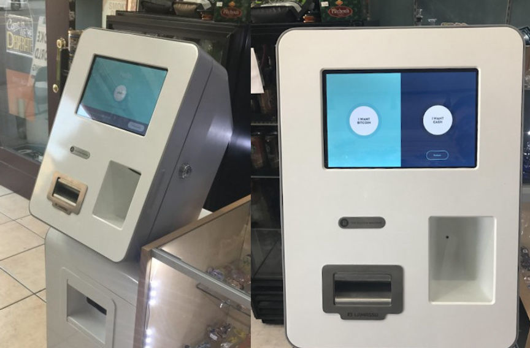
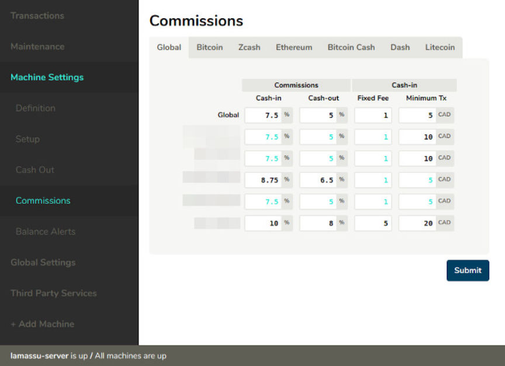
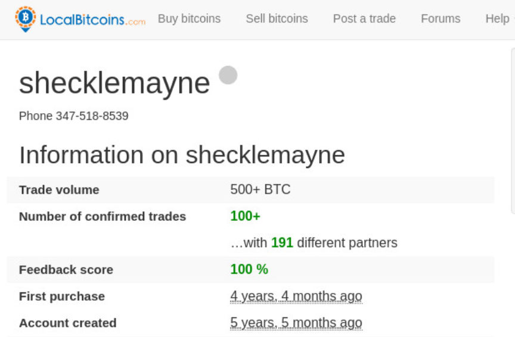
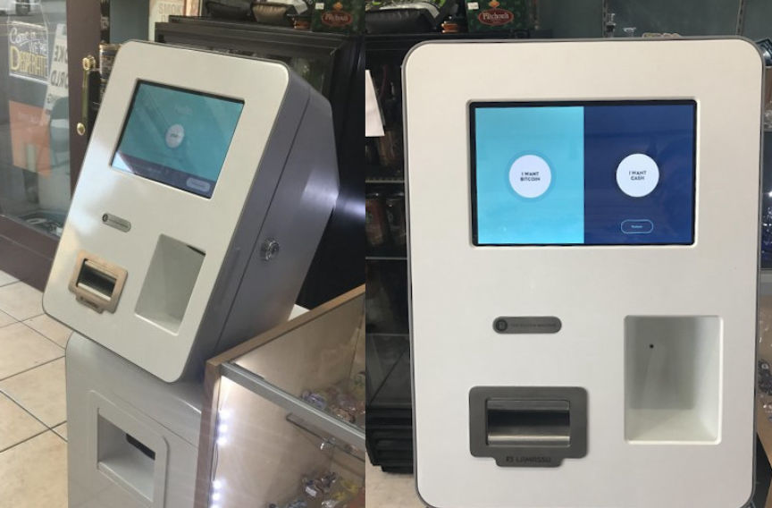
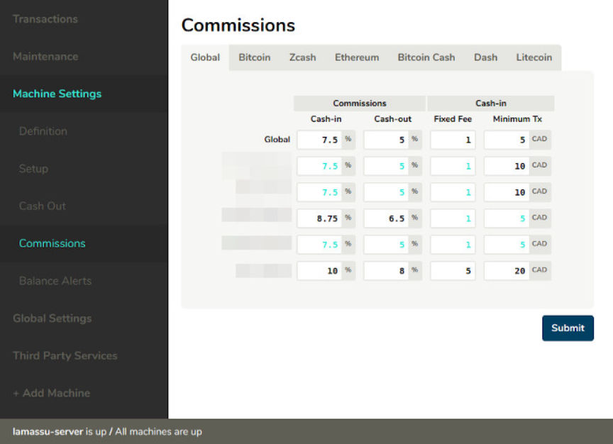
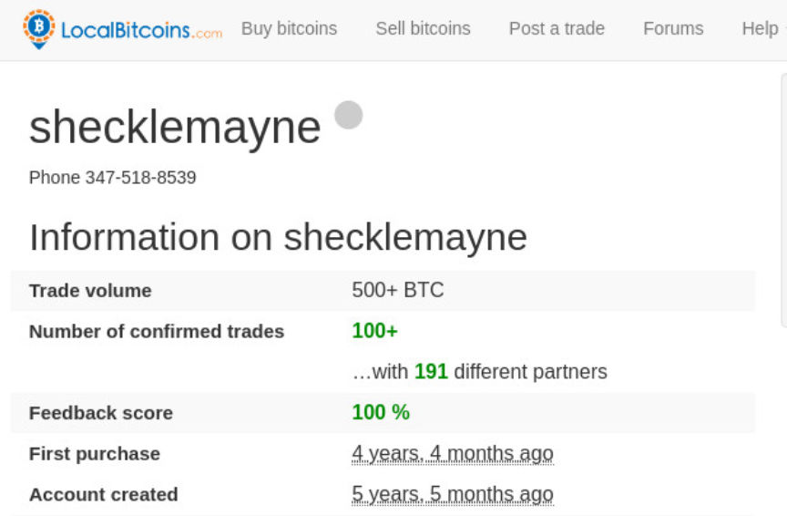

California Man Admits Drug Trafficking
~2 min read | Published on 2019-08-23, tagged Darkweb-Vendor, Drugs, General-News, Pleaded-Guilty using 437 words.
Kunal Kalra, 25, agreed to plead guilt to federal charges stemming from his money laundering business and drug trafficking operation. He admitted exchanging up to $25 million in cryptocurrency and cash from darkweb drug traffickers and others looking to launder money. Kalra allowed his customers to use his Bitcoin ATM kiosk.
According to the United States Attorney’s Office of the Central District of California, this is the first federal money laundering case involving a Bitcoin ATM kiosk.
A four-count criminal information charged Kalra with distribution of methamphetamine; laundering of monetary instruments; operating an unlicensed money transmitting business; and failure to maintain an effective anti-money laundering program. Kalra agreed to enter a guilty plea for all four charges included in the recently filed information.
Between May 2015 and October 2017, Kalra operated a virtual currency exchange, according to court documents. He charged a commission and only dealt with customers willing to exchange $5,000 or more in Bitcoin to cash.
He admitted that he exchanged Bitcoin for cash for darkweb drug dealers as well as members of a drug trafficking network unrelated to the California case. Kalra faces federal money laundering charges in the Texas Western District Court for his involvement in the drug trafficking network mentioned above.
To conceal his funds, Kalra established bank accounts in the names of other individuals and businesses. He admitted he had operated a Bitcoin ATM without any AML or KYC programs in place. He did not require the identity of his customers and never installed a camera at the ATM. One undercover law enforcement agent met Kalra online and later at a coffee shop in Los Angeles. The agent exchanged $400,000 in Bitcoin for cash through Kalra’s business. The agent also informed Kalra that the funds were the proceeds of the agent’s drug trafficking operation. Kalra continued to conduct business with the agent.
On Paxful, Kalra provided his Wickr ID and the address of his Bitcoin ATM.
He also admitted that in June 2017 he sold two pounds of methamphetamine to an undercover law enforcement officer for $6,000. The undercover officer met Kalra again and exchanged $50,000 in Bitcoin for cash through Kalra’s exchange business. Again, Kalra knew the funds had originated from an illicit source and still exchanged the Bitcoin.
During Kalra’s arrest, law enforcement seized $889,000 in cash and 54 Bitcoin in addition to other undisclosed cryptocurrencies.
His next court appearance will be in September. He faces a maximum sentence of life in prison.
Archived Press Release
According to the United States Attorney’s Office of the Central District of California, this is the first federal money laundering case involving a Bitcoin ATM kiosk.
A four-count criminal information charged Kalra with distribution of methamphetamine; laundering of monetary instruments; operating an unlicensed money transmitting business; and failure to maintain an effective anti-money laundering program. Kalra agreed to enter a guilty plea for all four charges included in the recently filed information.
Pictures from the shop where the ATM was located reveal that Kalra owned a Lamassu ATM.
Between May 2015 and October 2017, Kalra operated a virtual currency exchange, according to court documents. He charged a commission and only dealt with customers willing to exchange $5,000 or more in Bitcoin to cash.
Lamassu Bitcoin ATM Commissions Panel
He admitted that he exchanged Bitcoin for cash for darkweb drug dealers as well as members of a drug trafficking network unrelated to the California case. Kalra faces federal money laundering charges in the Texas Western District Court for his involvement in the drug trafficking network mentioned above.
Using the name shecklemayne, Kalra transacted more than 500 Bitcoin according to his LocalBitcoins profile.
To conceal his funds, Kalra established bank accounts in the names of other individuals and businesses. He admitted he had operated a Bitcoin ATM without any AML or KYC programs in place. He did not require the identity of his customers and never installed a camera at the ATM. One undercover law enforcement agent met Kalra online and later at a coffee shop in Los Angeles. The agent exchanged $400,000 in Bitcoin for cash through Kalra’s business. The agent also informed Kalra that the funds were the proceeds of the agent’s drug trafficking operation. Kalra continued to conduct business with the agent.
On Paxful, Kalra provided his Wickr ID and the address of his Bitcoin ATM.
He also admitted that in June 2017 he sold two pounds of methamphetamine to an undercover law enforcement officer for $6,000. The undercover officer met Kalra again and exchanged $50,000 in Bitcoin for cash through Kalra’s exchange business. Again, Kalra knew the funds had originated from an illicit source and still exchanged the Bitcoin.
During Kalra’s arrest, law enforcement seized $889,000 in cash and 54 Bitcoin in addition to other undisclosed cryptocurrencies.
His next court appearance will be in September. He faces a maximum sentence of life in prison.
Archived Press Release